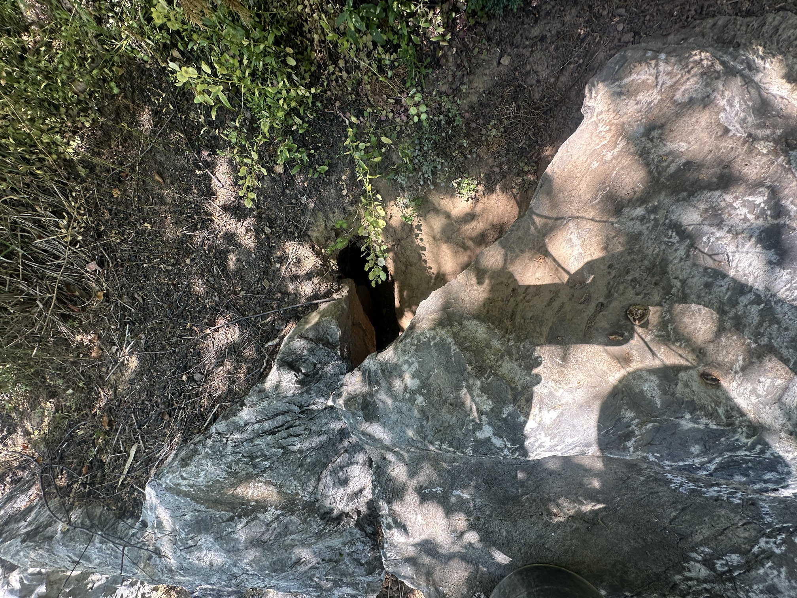

Wildlife
Mammals in your attic, under your shed, or through your garden. These are handled under our Pennsylvania Nuisance Wildlife Control Operator certification — a different license than pest control, and one most exterminators don't carry.

Groundhogs
Burrows under sheds, decks, porches, and concrete pads. Big appetite for gardens, bigger appetite for undermining whatever they dig beneath.
Groundhog removal →
Squirrels
Scratching and scurrying overhead, usually at dawn. Gray squirrels chew their way into soffits and gable vents and nest in attic insulation.
Squirrel removal →Bats
Evening fly-outs from a gable end, droppings on the siding, one loose in a bedroom. Protected species with strict timing rules — exclusion, never extermination.
Bat removal →Raccoons
Heavy movement in the attic or chimney, tipped trash, torn soffits. Females with kits are the usual spring call. Rabies vector species — professional handling matters.
Wildlife services →Skunks
Denning under decks and sheds, cone-shaped divots across the lawn from grub feeding. Removal is as much about the fix as the animal.
Wildlife services →Snakes & Others
Snakes, opossums, and the occasional surprise. Also dead animal removal from walls, crawl spaces, and under decks.
Wildlife services →Deer
Not an infestation — a browse problem. Stripped arborvitae, hostas, and yews, worst in winter.
Deer damage →